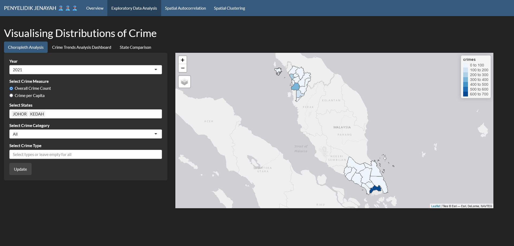
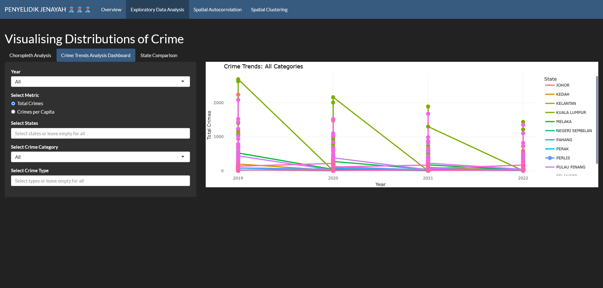
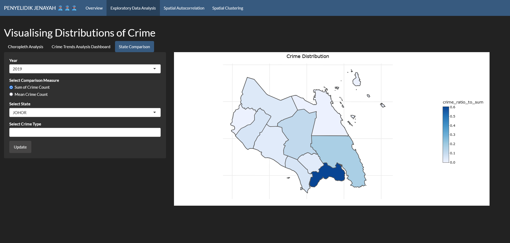
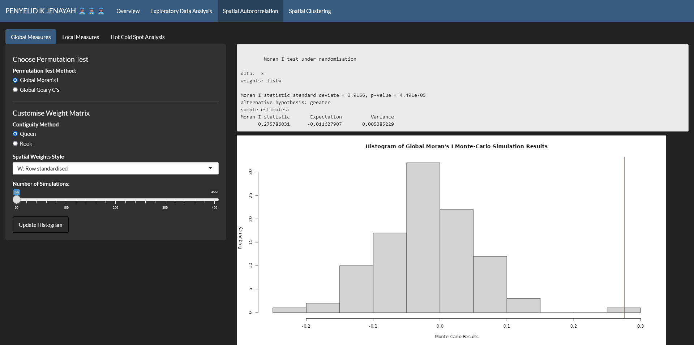
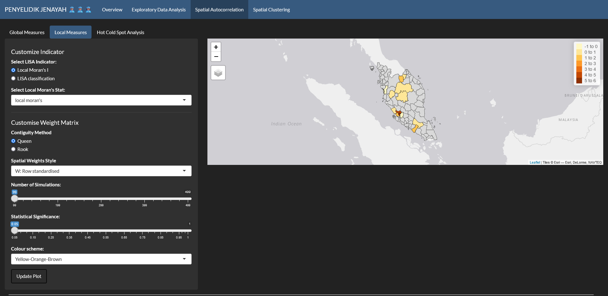
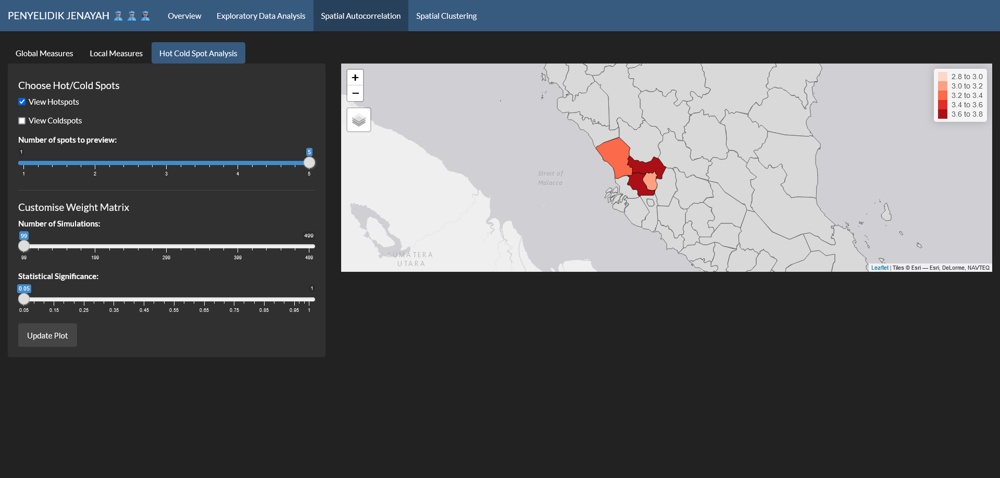
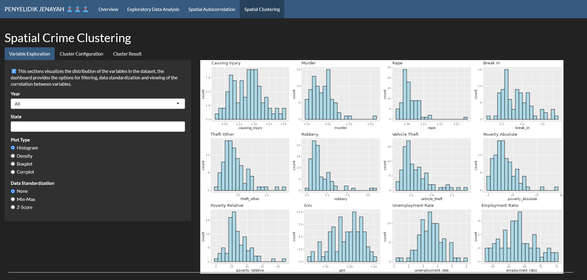
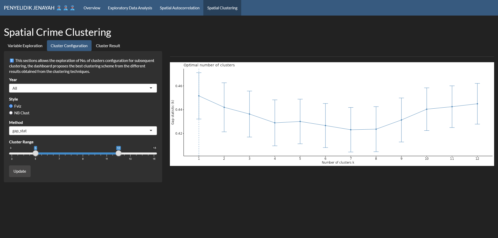
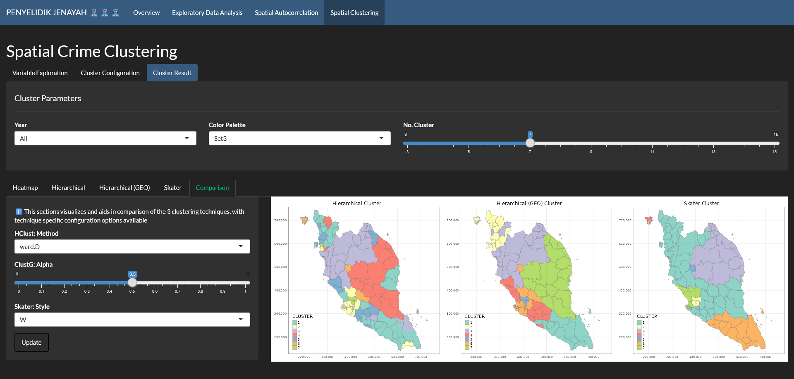

User Guide
User Guide
This is the user guide for Penyelidik Jenayah. You can access the Shiny application at this link.
Exploratory Data Analysis
Choropleth Analysis
The first tab of the page is the choropleth analysis. It allows users to visualize crime distributions across different regions of Malaysia.

Users can select a specific year to analyze, choose between overall crime count and crime per capita as the crime measure, and select specific states to focus on. Additionally, they can filter by crime category and crime type.
The color intensity of each region represents the level of the crime measure, with darker shades indicating higher values.
Crime Trends Analysis Dashboard
The second tab, crime trends analysis dashboard, allows users to visualize and analyze crime trends over time for different states in West Malaysia.

The dashboard displays line charts for each selected state, showing the trend of the chosen crime metric over the specified years. Different line colors represent different states, making it easy to compare trends across regions.
State Comparison
The third tab is state comparison . This tool enables users to compare crime distributions between states.

Users can select a year for comparison, choose between the sum of crime counts and the mean crime count as the comparison measure, and select one or multiple states to compare.
The main panel displays a choropleth map of Malaysia, where each district is color-coded based on the selected comparison measure for the chosen year. The color intensity of each state represents the level of the crime measure, darker shades indicating higher values. This visualization helps identify states with higher or lower crime rates relative to others.
Spatial Autocorrelation
Global Measures
The first tab allows users to choose between two permutation tests: Moran’s I and Geary’s C. Users can also customize the weight matrix by selecting the contiguity method (Queen or Rook) and the spatial weights style (row standardized).
 The dashboard displays the results of the selected permutation test, including the test statistic, its standard deviation, p-value, and the histogram of simulated values. The histogram helps visualize the distribution of the test statistic under the null hypothesis of no spatial autocorrelation.
Users can determine if there is significant spatial autocorrelation in the crime data. A positive Moran’s I or a negative Geary’s C indicates spatial clustering, while a negative Moran’s I or a positive Geary’s C suggests spatial dispersion.
Local Measures
Users can identify local clusters of high and low crime values across Malaysia in this tab. They can choose between Local Moran’s I and Local Geary’s C, and can customize the weight matrix by selecting the contiguity method and the spatial weights style.

Each district is color-coded based on its local indicator value. The color scheme indicates the type of spatial cluster: high-high clusters (red), low-low clusters (blue), high-low clusters (yellow), and low-high clusters (orange). Users can identify areas with significant clustering of high or low crime values, providing insights into the underlying spatial processes driving crime distribution.
Hot Cold Spot Analysis
Users can choose to view either hotspots (clusters of high values) or coldspots (clusters of low values). They can also customize the weight matrix by selecting the contiguity method (Queen or Rook) and the spatial weights style (row standardized).

Each district is color-coded based on its statistical significance. Red areas indicate hotspots (statistically significant clusters of high values), while blue areas indicate coldspots (statistically significant clusters of low values). Users can view areas with significant clustering of high or low crime values.
Spatial Clustering
Variable Exploration
The “Spatial Crime Clustering” section of the Exploratory Data Analysis page provides tools for understanding the distribution of variables related to crime in Malaysia.

Users can visualize the distribution of different variables in the dataset. They can select a specific year, state, and plot type (histogram, density plot, box plot, or correlation matrix) to explore the data. Additionally, data can be standardized using min-max scaling or z-score normalization.
Users can gain insights into the central tendency, spread, and shape of the data. This information can help identify potential outliers, assess the normality of the data, and understand relationships between variables.
Cluster Configuration
The Cluster Configuration tab in the Spatial Crime Clustering section allows users to explore different clustering configurations for identifying spatial patterns in crime data.

Users can select a specific year and choose between two clustering methods: Fviz or NbClust. The NbClust method uses the gap statistic to determine the optimal number of clusters. Users can also specify a range of cluster numbers to explore. The dashboard displays a plot of the gap statistic for different numbers of clusters. The optimal number of clusters is the one with the highest gap statistic value.
Cluster Result
The “Cluster Result” tab in the Spatial Crime Clustering section displays the results of the spatial clustering analysis.

Users can select a specific year and choose between three clustering techniques: Hierarchical, ClustG, and Skater. Each technique has its own set of parameters that can be adjusted to fine-tune the clustering results. The dashboard displays maps with different color-coded clusters representing regions with similar crime patterns. The number of clusters can be adjusted using the slider.